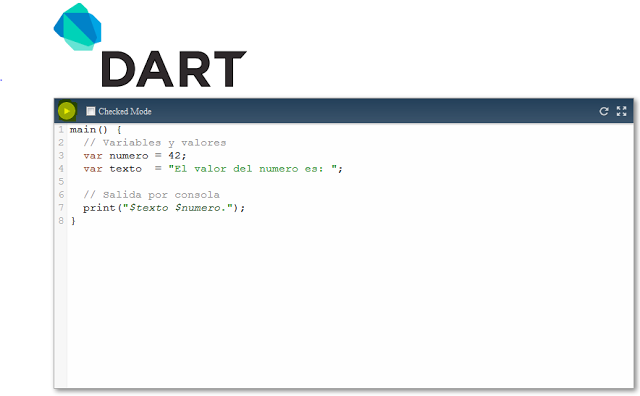

Que es Dart?
DART es un nuevo lenguaje para programación Web desarrollado por Google. Entre sus principales beneficios está la estructura que brinda a los proyectos,
haciéndolos más fáciles de mantener a gran escala, también ofrece mejoras considerables en rendimiento, seguridad y sintaxis. La sesión consta de dos partes,
la primera una corta presentación introductoria del lenguaje y las herramientas a cargo de +Daniel Sarmiento, seguida de la realización guiada de un taller práctic
donde haremos una aplicación frontend completa con DART.
Los prerrequisitos para el taller son: Familiaridad de conceptos fundamentales de programación Web Conocimiento básicos de HTML, CSS y un lenguaje de programación
como Javascript, Java, C#. Instalar el Dart Editor disponible para Mac, Windows y Linux
Figura 1 Dart
DartEditor es el primer editor lanzado por Google (noviembre de 2011) para escribir aplicaciones Dart. Es un editor ligero de codigo abierto que incluye todas
las herramientas necesarias para desarrollar, analizar y depurar las aplicaciones. Permite crear y editar los ficheros y gestionar los directorios de los
proyectos y soporta resaltado de sintaxis y auto-completado de código.
Además es posible navegar y buscar cualquier elemento que necesites del API de Dart, así como establecer puntos de parada y hacer debug.
Dos años después (novimienre de 2013) el equipo de desarrolladores anuncia que está trabajando en Spark, un nuevo IDE basado en el browser (es una Chrome app)
para construir Chrome apps. Ha sido desarrollado con Dart y utiliza el framework Polymer
Figura 1.2 Dart
Clases. Mientras que JavaScript es orientado a objetos y no provee clase, es un lenguaje en base a prototipos, no un lenguaje en base a clases. Todo lo contrario
a Dart.
Se puede realizar tecleado estático.
El lenguaje soporta librerías. "Cargar ese archivo antes que eso", es una forma muy primitiva de implementar librerías en la mayoría de los lenguajes que tienen
soporte explícito.
Errores en tiempo de compilación son errores que impiden la ejecución. Un error en tiempo de compilación
debe ser informado por un compilador Dart antes de que se ejecute el código erróneo.
Una implementación de Dart tiene una considerable libertad respecto de cuándo se da la compilación que
se lleva a cabo. Implementaciones de lenguaje programación modernos a menudo entrelazados
compilación y ejecución, lo que puede retrasarse la compilación de un método,
por ejemplo, hasta que es invocado rst. En consecuencia, los errores en tiempo de compilación en un método m
pueden presentarse hasta el momento de la invocación de rst m ' s.
Como un lenguaje web, Dart a menudo se carga directamente de la fuente, con no inter-
mediar representación binaria. En aras de carga rápida, Dart implemen-
limitaciones pueden optar por evitar el análisis completo de los cuerpos de método, por ejemplo. Esto puede
hacerse la entrada tokenización y comprobando para llaves equilibrados en método
entrada de cuerpo. En una implementación, errores de sintaxis incluso se detectan sólo
Cuando el método debe ser ejecutado, en cuyo caso será compilado (JIT).
En un entorno de desarrollo de un compilador debe por supuesto la compilación de informar
errores con impaciencia con el fin de servir mejor al programador.
Si se produce un error de tiempo de compilación no capturado dentro del código de un aislante de la corriente
A, A es suspendido inmediatamente. La única circunstancia en un tiempo de compilación el cual el
error pude ser atrapado y sería mediante código ejecutar ectively, donde el sistema de espejo Puede cogerlo.

Figura 1.3 Dart
Por lo general, una vez que se produce un error en tiempo de compilación, se suspende A, una voluntad
Entonces se terminó. Sin embargo, esto depende del ambiente global. Un dardo de un
motor se ejecuta en el contexto de un embebido, un programa que interactúa entre el
motor y el entorno informático. El embedder a menudo
al ser un navegador web, pero no es necesario; puede ser un programa C++ en el servidor por
ejemplo. Cuando falla un aislante con un error en tiempo de compilación como se describió anteriormente,
Devuelve el control al embedder, junto con una excepción que describa el problema.
Esto es necesario para que el embedder pueda limpiar recursos etc.. Es entonces cuando el
embebido hace la decisión si se debe terminar el aislante o no.
ADVERTENCIAS estáticas son esos errores reportados por el verificador estático. Los cuales no tienen
en ejecución. Aunque no todos, las advertencias estáticas se refieren a los tipos, en el cual
caso se conocen como advertencias de tipo estático. Deben proporcionarse advertencias estáticas
para dar a los utilizados durante el desarrollo tales como los compiladores incorporan en IDEs
o si no destinado a ser utilizado por desarrolladores para desarrollar código. Compiladores
que forman parte de entornos de ejecución runtime tales como máquinas virtuales
Chromium: es el directorio donde se almacena una compilación especial del navegador web Chromium llamada Dartium porque incluye la máquina virtual de Dart(
Dart VM). De este modo podrás ejecutar tus aplicaciones Dart nativas directamente en este navegador.
Actualmente no es posible ejecutar código nativo Dart en ningún navegador más porque ninguno incluye aún la máquina virtual; Es posible hacerlo si se convierte
Dart a JavaScript.
Dart-sdk: es el kit de desarrollo de software de Dart (SDK). Incluye todas las librerías de Dart como dart:core o dart:html y tiene herramientas de linea de
comandos muy útiles como el compilador de Dart-to-JavaScript y la máquina virtual de Dart.
Samples: contiene varios ejemplos de aplicaciones Dart para aprender y profundizar con ejemplos de aplicaciones reales.
Bibliotecas y secuencias de comandos
Un programa Dart consiste en una o más bibliotecas y puede ser construido una
o más unidades de compilación. Una unidad de compilación puede ser una biblioteca o una parte.
Una biblioteca consiste en (un posiblemente vacío) conjunto de las importaciones, activo de las exportaciones, y
un conjunto de declaraciones de alto nivel. Una declaración de alto nivel es ya sea una clase, un
tipo alias, declaración, una función o una declaración de una variable.
Figura 2 Dart
Las bibliotecas pueden ser nombradas explícitamente o implícitamente. Una explícitamente nombrada
comienza con la biblioteca de palabra (posiblemente precedido con cualquier aplicable a
las anotaciones de metadatos), seguido por un quali identi ed er que da el nombre de
la biblioteca.
Técnicamente, cada punto e identi er es una muestra independiente y así espacios entre
son aceptables. Sin embargo, el nombre de la biblioteca real es la concatenación de los
identi simple ers puntos y no contiene espacios.
Una biblioteca implícitamente nombrada tiene la cadena vacía como su propio nombre.
El nombre de una biblioteca se utiliza para atar a las partes por separado compiladas de la
Biblioteca (llamado piezas) y puede ser utilizado para la impresión y, más generalmente, rexión.
El nombre puede ser relevante para la evolución de idioma adicional.
Diseñado para un uso generalizado de las bibliotecas deben de evitar las colisiones de nombres. Pub de DART
sistema de gestión de paquetes proporciona un mecanismo para hacerlo. Cada paquete de pub
se garantiza un nombre único, efectivo e impotente para un namespace global.
Figura 3 Dart
Figura 4 Dart